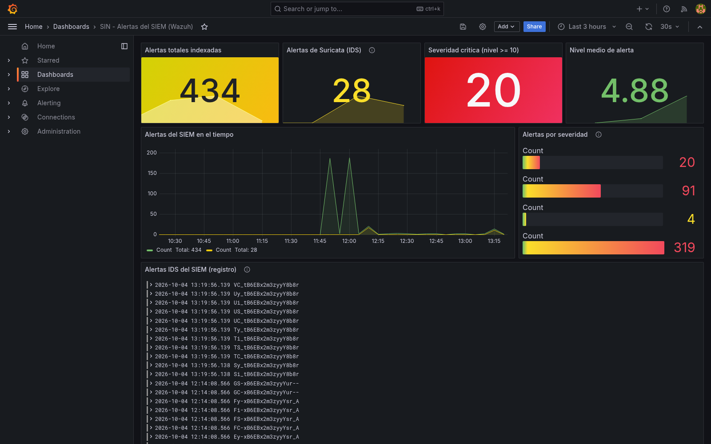
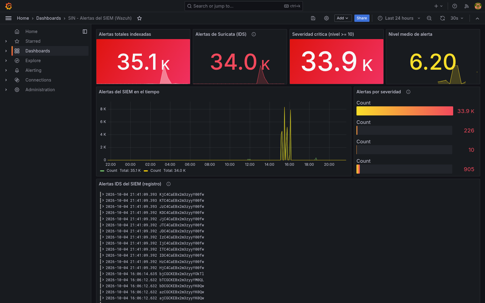

Laboratorio SIN · campaña de diez escenarios ejecutada en dos vueltas de la misma metodología, con las correcciones de la primera aplicadas en la segunda. Incluye el resultado institucional comunicado por el Servicio de Impuestos Nacionales y la tabla que separa las fuentes de resultado de este tablero.
Ocho cifras resumen el resultado de la metodología. La línea base es el estado del instrumental al terminar la primera vuelta y antes de aplicar corrección alguna. La medición final es el estado posterior a las catorce lecciones registradas. Cuatro tarjetas están destacadas en verde porque su indicador crece entre las dos vueltas, dos muestran el tiempo de detección, una mide la duración del ciclo y la última cuenta las lecciones cerradas. La tabla que sigue declara qué cuenta cada cifra y cuál es su denominador.
| Indicador | Qué cuenta | Denominador | Archivo de origen |
|---|---|---|---|
| Escenarios con medición | Escenarios de la campaña a los que el instrumental atribuye una detección y registra su hora | Los diez escenarios que ejecuta cada vuelta | Reporte de indicadores de cada vuelta |
| Componentes que registran detección | Componentes que dejan un registro legible por el calculador | Los seis componentes desplegados | Reporte de indicadores |
| Técnicas con detección | Técnicas que un escenario activa y que reciben fuente de atribución | Las diez técnicas que activa la campaña | Reporte de cobertura de técnicas |
| Tácticas con detección | Tácticas del marco que cubren esas técnicas | Las seis tácticas que la campaña recorre | Reporte de cobertura de técnicas |
| Percentil 95 de detección | Percentil 95 de la distribución de los tiempos de detección | Los diez tiempos de cada vuelta | Reporte de indicadores |
| Tiempo medio de detección | Promedio aritmético de los tiempos de detección | Cuatro tiempos en la línea base y diez en la medición final | Reporte de indicadores |
| Ciclo de corrección | Tiempo transcurrido entre las dos mediciones | No aplica, es una duración | Marcas de tiempo de ambos reportes |
| Lecciones resueltas | Hallazgos con una resolución documentada, por corrección o por mitigación | Las catorce lecciones registradas | Registro de lecciones aprendidas |
La metodología transformó el instrumental de medición, no el señuelo. El señuelo ejecutó los mismos diez escenarios en las dos vueltas con las mismas técnicas, de modo que la diferencia entre las columnas corresponde al trabajo de la metodología. La columna de la vuelta 1 es la línea base, ejecutada a las 16:07 UTC del 4 de octubre de 2026 antes de aplicar corrección alguna. La columna final es la vuelta 2, ejecutada a las 20:33 UTC del mismo día después de aplicar las catorce lecciones registradas. Todo este apartado compara esos dos momentos y ningún otro.
| Indicador | Vuelta 1 | Vuelta 2 | Δ |
|---|---|---|---|
| Escenarios con tiempo de detección medido | 4 | 10 | +6 |
| Fuentes de registro | 3 | 6 | +3 |
| Técnicas con fuente de detección | 4 | 10 | +6 |
| Tácticas con fuente de detección | 3 | 6 | +3 |
| Escenarios ejecutados | 10 | 10 | = |
| Técnicas del inventario | 17 | 17 | = |
| Archivos de evidencia | 91 | 91 | = |
| Calidad de la evidencia | 100 | 100 | = |
| Lecciones registradas | 7 | 14 | +7 |
| Lecciones resueltas | 7 | 14 | +7 |
La campaña ejecuta diez escenarios y el señuelo registró los diez en ambas vueltas. La vuelta 1 estableció la referencia de medición sobre cuatro de ellos. La vuelta 2 amplía esa cobertura a la totalidad de la campaña. Los cuatro escenarios que sostienen referencia en las dos vueltas conservan el mismo número de muestras y el mismo criterio de cálculo, de manera que esos cuatro son los que se comparan.
| Escenario | Técnica | Vuelta 1 | Medición final | Reducción | Origen del dato |
|---|---|---|---|---|---|
| S01 · Reconocimiento activo | T1595 | 16,851 s | 15,91 s | 5,6 % | Interfaz de servicios del atacante |
| S02 · Escaneo web | T1595.002 | 1,214 s | 1,095 s | 9,8 % | Portal del señuelo |
| S05 · Suplantación de credenciales | T1110.004 | 1,734 s | 1,145 s | 34,0 % | Interfaz de servicios del señuelo |
| S07 · Abuso de la interfaz | T1078 | 1,063 s | 0,264 s | 75,2 % | Interfaz de servicios del señuelo |
| Escenario | Técnica | Vuelta 1 | Medición final | Fuente que lo registra |
|---|---|---|---|---|
| S03 · Fuerza bruta por acceso remoto | T1110.001 | fuera de la referencia | 0,000 s | Emulador de acceso remoto |
| S04 · Inyección de consultas | T1190 | fuera de la referencia | 0,137 s | Portal del señuelo |
| S06 · Inyección en el navegador | T1059.007 | fuera de la referencia | 0,460 s | Portal del señuelo |
| S08 · Depósito de archivo | T1105 | fuera de la referencia | 0,562 s | Archivo señuelo |
| S09 · Conexión inversa | T1059.004 | fuera de la referencia | 0,000 s | Emulador de acceso remoto |
| S10 · Exfiltración por nombres de dominio | T1048.003 | fuera de la referencia | 0,646 s | Sensor de red |
Los diez escenarios de la medición posterior. Cada barra indica cuántos escenarios caen en cada tramo de tiempo.
Cada escenario es detectado por un componente distinto. La vuelta 1 tenía tres componentes y la medición final seis. Esa ampliación es la que devuelve la medición a los seis escenarios que la primera vuelta no tenía.
El inventario del señuelo comprende diecisiete técnicas, repartidas en ocho tácticas del marco. La campaña ejecuta diez escenarios y cada escenario activa una técnica distinta. Esas diez técnicas son las que la medición final cubre con una fuente de detección. Las siete técnicas restantes pertenecen al inventario del señuelo sin que ningún escenario las ejerce, de manera que la tabla las declara aparte y no les asigna tiempo de detección.
| Técnica | Táctica | Escenario | Fuente en la medición final |
|---|
La metodología se aplicó dos veces sobre el mismo señuelo. La primera medición produjo el conjunto de lecciones que originó las correcciones. La segunda midió el efecto de esas correcciones.
| Hito | Momento | Qué ocurrió | Evidencia |
|---|---|---|---|
| Medición de la vuelta 1 | 4 oct 2026 · 16:07 UTC | Diez escenarios ejecutados, medición en cuatro de ellos | Reporte de indicadores de la vuelta 1 |
| Cadena de alertas y indexación | 4 oct 2026 · 16:08 UTC | Publicador propio operativo, tablero con datos reales | Commits 20ee788 y 2d13573 |
| Registro de lecciones cerrado | 4 oct 2026 · 18:32 UTC | Catorce lecciones con hallazgo, causa raíz y mejora aplicada | Registro de lecciones aprendidas |
| Medición posterior | 4 oct 2026 · 20:33 UTC | Diez escenarios ejecutados, medición en los diez | Reporte de indicadores de la vuelta 2 |
| Duración total del ciclo | 4 h 26 min | De la vuelta 1 a la medición final | Marcas de ambos reportes |
La metodología se estructura en cinco fases encadenadas. Cada una aporta un elemento distinto al resultado final, de manera que la columna de aportación declara qué se gana con ella y la columna de indicador recoge la medición que entrega.
| Fase | Qué aporta | Indicador | Vuelta 1 | Medición final |
|---|---|---|---|---|
| 1 · Diseño del señuelo | Define el activo que se engaña, el nivel de interacción y el perfil del atacante, de manera que la campaña tenga un denominador fijo de diez escenarios | Escenarios ejecutados | 10 de 10 | 10 de 10 |
| 2 · Despliegue aislado | Aísla el señuelo en una red separada y verifica la composición efectiva desde el propio contenedor atacante, de manera que se demuestre qué queda alcanzable desde fuera | Segmentos con composición verificada | — | 3 |
| 3 · Captura, enriquecimiento y custodia | Registra las acciones del adversario con validez forense y conserva cada archivo con su huella, de manera que la evidencia del ciclo se pueda auditar | Calidad de la evidencia | 100 de 100 | 100 de 100 |
| 4 · Correlación con gestión de incidentes | Vincula cada evento capturado con la alerta clasificada y con su técnica, de manera que el tiempo medido sea el del ciclo completo y no el de un registro suelto | Fuentes que registran detección | 3 | 6 |
| 5 · Medición de impacto y lecciones aprendidas | Cuantifica la efectividad, contrasta las dos vueltas y registra cada discrepancia con su causa raíz, de manera que la mejora del ciclo quede verificada | Escenarios con medición Lecciones resueltas | 4 de 10 7 | 10 de 10 14 de 14 |
Catorce lecciones registradas en las dos vueltas, todas con una resolución documentada. Once se resuelven con su causa raíz identificada y su corrección aplicada, mientras que las tres restantes se resuelven con una mitigación, porque su causa está fuera del segmento que controla la metodología. La columna de estado distingue las dos formas de cierre y la de fase muestra dónde se produjo cada una.
| ID | Fase | Hallazgo | Causa raíz | Corrección aplicada | Estado |
|---|
Registros que el señuelo y los sensores produjeron en cada vuelta. El volumen crece porque los escenarios que antes no generaban evento ahora lo hacen.
| Indicador | Vuelta 1 | Medición final | Variación |
|---|---|---|---|
| Ataques registrados en el señuelo | 54 | 254 | +370 % |
| Solicitudes atendidas por la interfaz de servicios | 725 | 1 508 | +108 % |
| Conexiones capturadas por el emulador | 7 | 38 | +443 % |
| Peticiones recibidas por el portal | 15 765 | 78 186 | +396 % |
| Archivos de evidencia con huella | 91 | 91 | Constante |
| Calidad de la evidencia verificada | 100 de 100 | 100 de 100 | Constante |
El tablero de alertas del laboratorio en los dos momentos del ciclo. Cada panel conserva su propia ventana temporal, declarada en la esquina superior derecha, porque la cadena de indexación se puso en marcha entre una captura y la otra.

Nota. La serie temporal muestra picos aislados y un nivel
medio de alerta de 4,88 sobre cuatrocientas treinta y cuatro alertas
indexadas. Fuente: v2.0-it1/04-captura-eventos/02_grafana-dashboard-siem.png.

Nota. La serie temporal sostiene actividad a lo largo de
toda la ventana y el nivel medio de alerta sube a 6,20. Fuente:
v2.1-it2/04-captura-eventos/05_grafana-dashboard-siem.png.
El libro oficial de resultados que entrega la institución calcula la madurez global como el promedio simple de los catorce instrumentos sobre la matriz de treinta participantes. Ese cálculo arroja 99,0873015873016 %, cifra que redondea a 99,09 %. El tablero presenta ese valor con el carácter de nivel que la institución atribuye a su propio proceso.
| Fuente | Resultado | Naturaleza del dato | Respaldo disponible |
|---|---|---|---|
| Laboratorio · Prototipo 2 | 10 de 10 escenarios medidos | Ejecución verificada sobre archivos de evidencia | Reportes de indicadores de las dos iteraciones |
| Laboratorio · Prototipo 2 | Percentil 95 de 9,266 s | Ejecución verificada sobre archivos de evidencia | Reporte de indicadores de la segunda iteración |
| Libro oficial de resultados del Servicio de Impuestos Nacionales | 99,09 % | Cálculo del libro oficial sobre la matriz posterior de 30 participantes | Libro oficial, hoja de Resultados postest |
Nota. Las dos primeras filas proceden de la ejecución instrumentada en el laboratorio y la tercera del libro oficial de resultados. No comparten escala ni unidad de medida, de manera que la relación entre ellas se resuelve por función y no por magnitud. El 99,09 % corresponde al cálculo que el libro oficial practica sobre la matriz posterior de treinta participantes, que aporta el tamaño de muestra, el desglose de los catorce instrumentos y la memoria de cálculo. Fuente: libro oficial de resultados del Servicio de Impuestos Nacionales y archivos de evidencia del repositorio.
Metodología Honeypot para la Gestión de Incidentes en Servicios Fiscales conforme a Normas Internacionales. Tesis de maestría. Capítulo IV, Marco Práctico. Dashboard de resultados del Prototipo 2, ejecutado sobre el contexto del Servicio de Impuestos Nacionales de Bolivia.
Este tablero reúne únicamente resultados medidos en el Prototipo 2, de manera que no incluye la línea base del diagnóstico institucional ni la trazabilidad de las brechas que la metodología atiende. Esa comparación se encuentra en el capítulo IV, en los apartados 4.4.1 y 4.4.5, y en el tablero completo que acompaña a los resultados del diagnóstico.
Todas las cifras proceden de un archivo del repositorio y declaran su origen
en las rutas siguientes.
v2.0-it1/07-metricas/kpi_report.json,
v2.1-it2/07-metricas/kpi_report.json,
v2.0-it1/07-metricas/mitre_coverage.json,
evidencias/lecciones-aprendidas.md,
evidencias/INDICE.md y el historial de commits. La cifra de
99,09 % procede del libro oficial de resultados del Servicio de Impuestos
Nacionales y se presenta con la hoja que la calcula. Ningún valor
fue estimado ni completado por analogía. El tablero no
incluye comprobación de hipótesis.